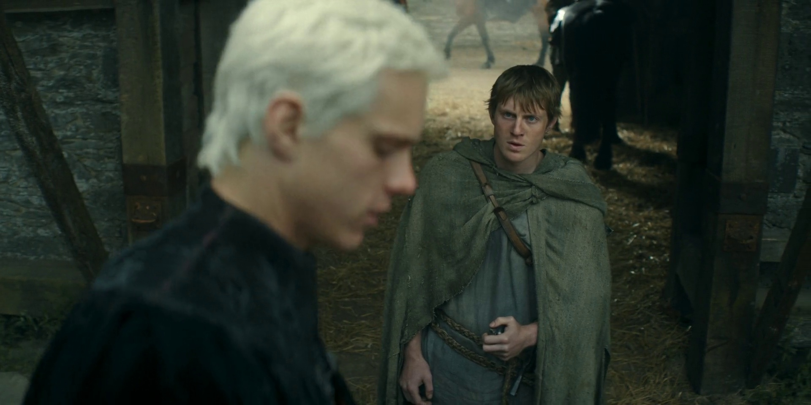
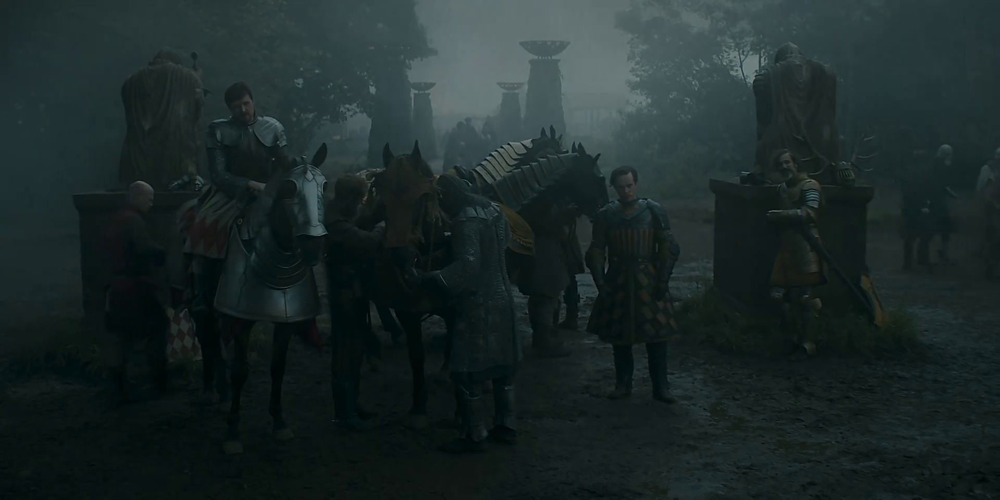
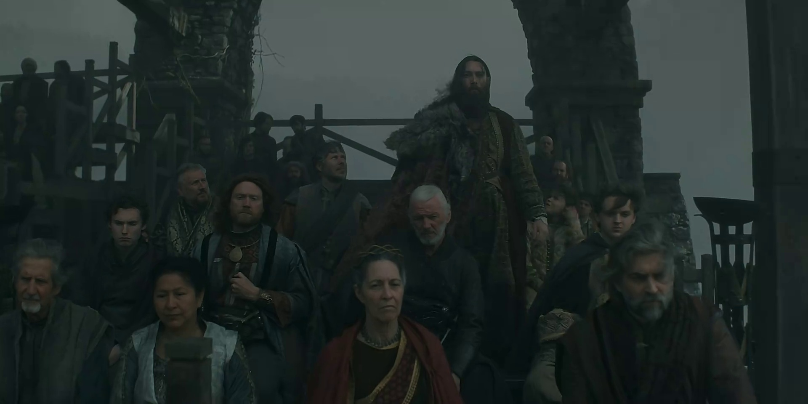
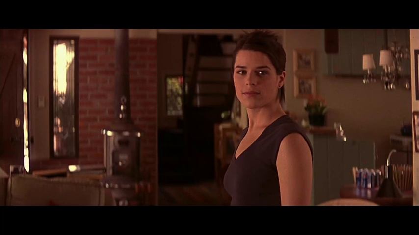
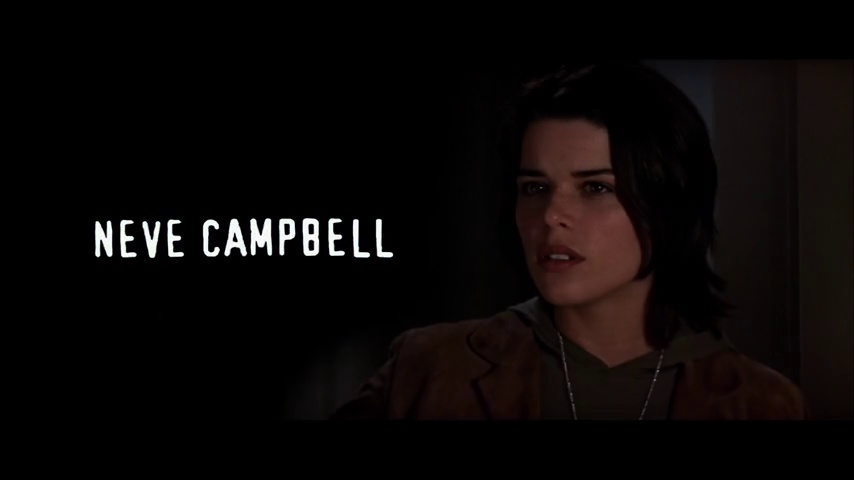
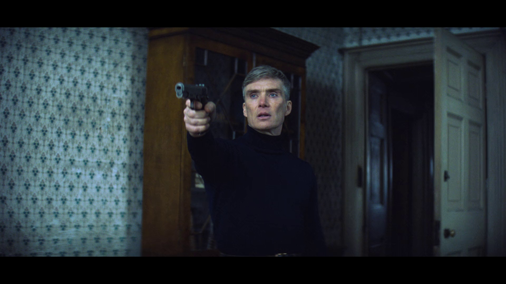
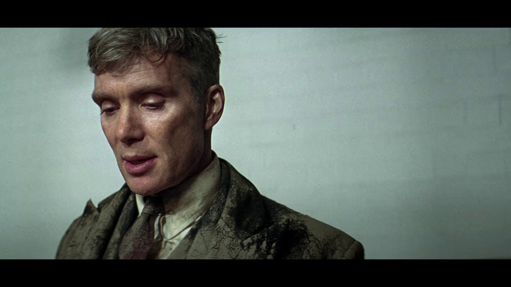
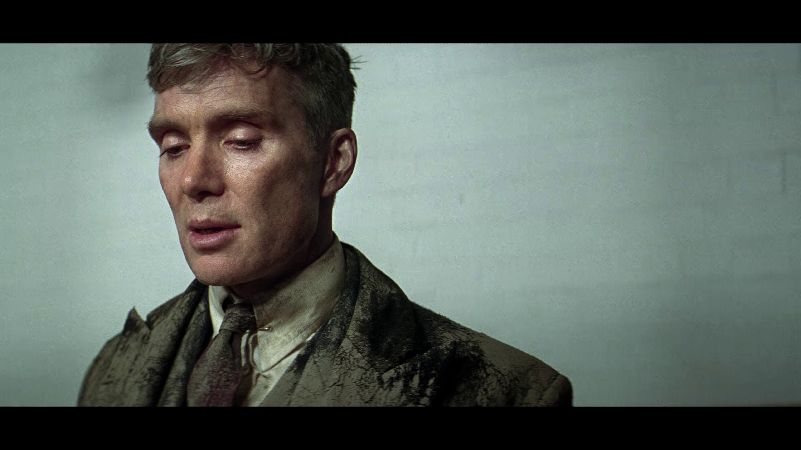

Crie vídeos virais automaticamente para TikTok e Reels usando Inteligência Artificial.
Acessar Software







Acesse nossa biblioteca exclusiva de vídeos e imagens de personagens(filmes e séries) e celebridades.
Acessar Banco